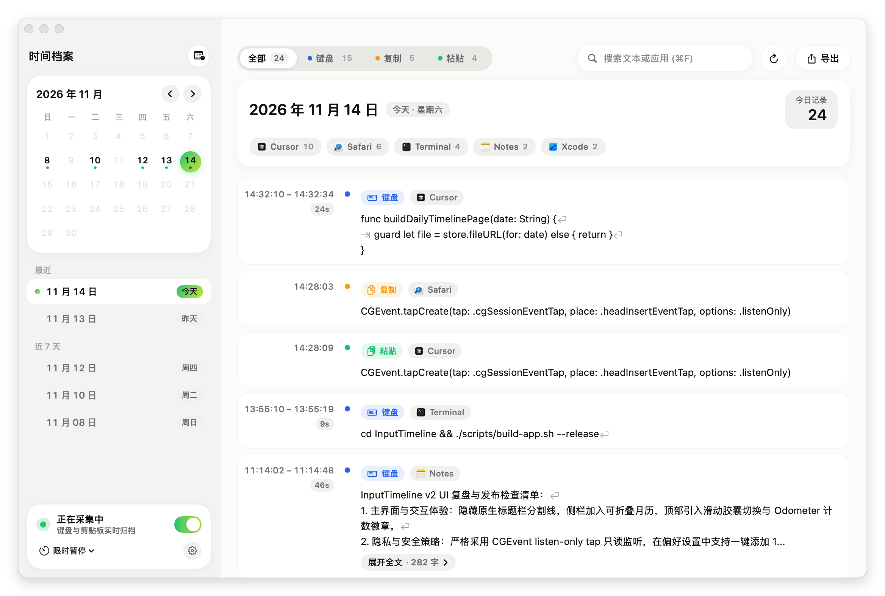

键盘静默分段与隐私排除
采用系统级 CGEvent listen-only tap 只读监听按键，绝不拦截或篡改输入；结合静默间隔与前台应用切换自动切分输入段。
- 静默分段间隔默认
2 秒，可在设置中按1–10 秒步进调节 - 通过
NSWorkspace识别前台应用名称与真实图标，切窗即自动拆段 - 支持自定义「隐私排除应用」与一键添加
1Password/钥匙串访问等敏感应用
macOS 原生本地输入记录工具 — 只读监听键盘与剪贴板，采用全新 Plush UI 呈现每日输入时间线并保存为结构化 JSON。
所有记录均仅存于本地，可按需配置分段、隐私排除与系统集成。

基于 Swift 6、SwiftUI 与 AppKit 原生构建，Plush UI 温润交互搭配 100% 本地可验证数据，支持系统浅色与深色模式无缝切换。
采用系统级 CGEvent listen-only tap 只读监听按键，绝不拦截或篡改输入；结合静默间隔与前台应用切换自动切分输入段。
2 秒，可在设置中按 1–10 秒 步进调节NSWorkspace 识别前台应用名称与真实图标，切窗即自动拆段1Password / 钥匙串访问 等敏感应用
准确识别 ⌘C / ⌘V 快捷键并记录剪贴板纯文本及来源应用，配合 Plush 卡片与三色语义圆点清晰呈现操作轨迹。
#2563EB 键盘）、橙（#F59E0B 复制）、绿（#16C26B 粘贴）胶囊区隔⌫ ↩ ↵ → ⎋）与搜索关键词高亮侧栏集成可折叠月历与按日分组列表，右侧支持类型分段、活跃应用胶囊与关键词防抖联动检索，并按页流式加载。
~/Library/Application Support/InputTimeline/<YYYY-MM-DD>.json3pt 无边框细滚动条，支持 NSSavePanel 导出
MenuBarExtra 升级为卡片式弹窗，随时查看状态、快捷暂停并快速复制最近记录；搭配仓库内置技能由 AI 助你梳理每日工作。
15m / 30m / 60m 限时暂停并在到期后自动恢复采集.cursor/skills/analyze-input-timeline/（含清洗与分块脚本）开放、人类可读且便于脚本处理的纯本地 JSON 结构，键盘与剪贴板事件均附带来源应用上下文。
{
"date": "2026-11-14",
"silenceGapSeconds": 2,
"items": [
{
"kind": "键盘",
"start": "2026-11-14 14:32:10",
"end": "2026-11-14 14:32:34",
"appName": "Cursor",
"text": "func buildDailyTimelinePage(date: String)\r"
},
{
"kind": "复制",
"at": "2026-11-14 14:28:03",
"appName": "Safari",
"text": "CGEvent.tapCreate(options: .listenOnly)"
},
{
"kind": "粘贴",
"at": "2026-11-14 14:28:09",
"appName": "Cursor",
"text": "CGEvent.tapCreate(options: .listenOnly)"
}
]
}
JSON 原文忠实保留退格、回车、制表符等按键控制字符；主窗口卡片、原文检视弹窗与 parse_timeline.py 会将其转换为易读符号。
| 原始字符 | 显示符号 | 按键含义 |
|---|---|---|
\b (\u0008) |
⌫ | 退格删除 (Backspace) |
\r |
↩ | 回车确认 (Return) |
\n |
↵ | 换行符 (Newline) |
\t |
→ | 制表缩进 (Tab) |
ESC (\u001B) |
⎋ | 退出 / 取消 (Escape) |
#2563EB
复制 #F59E0B
粘贴 #16C26B
源码按 App / Models / State / Services / Utilities / UI 清晰分层，从只读监听到 Actor 并发落盘保持透明可控。
构建脚本会自动选用本机稳定的 Apple Development / Developer ID 签名身份，打包并同步安装至 /Applications/InputTimeline.app。
基于 Swift 6 Package Manager 构建，默认自动签名并同步至「应用程序」目录后重启运行，避免重编导致 TCC 权限重置。
git clone https://github.com/lxx-003/input-time-line.git cd input-time-line/InputTimeline ./scripts/build-app.sh
若仅需打包而不自动启动或安装，可使用 ./scripts/build-app.sh --no-open --no-install；日常可直接运行 ./scripts/open-app.sh。
仓库内置 .cursor/skills/analyze-input-timeline/，提供 parse_timeline.py 与 chunk_timeline.py 清洗与分块脚本。
python3 .cursor/skills/analyze-input-timeline/scripts/parse_timeline.py 2026-11-14 python3 .cursor/skills/analyze-input-timeline/scripts/chunk_timeline.py 2026-11-14
如需迁移至其他 AI 工具（如 Claude Code），将 analyze-input-timeline/ 目录复制到对应 skills 目录即可。
关于系统权限、隐私排除、限时暂停与本地编译的清晰解答。
1Password、钥匙串访问、Bitwarden、KeePassXC 等），当这些应用处于前台时自动跳过所有键盘和剪贴板读取。
ApplicationServices 提供的 CGEvent listen-only tap（只读监听），仅接收按键通知而绝不拦截、延迟或篡改任何按键输入；所有数据只写本地 ~/Library/Application Support/InputTimeline/，零网络请求。
15m / 30m / 60m，系统会暂停采集并在状态副标题实时显示预计自动恢复时间（如「将于 15:05 自动恢复」），到期后自动切回采集状态。
./scripts/build-app.sh 默认会自动寻找本机稳定的 Apple Development / Developer ID 证书签名并覆盖安装到 /Applications/InputTimeline.app，避免频繁掉权限。若使用 ad-hoc 签名导致权限失效，只需在「系统设置 → 隐私与安全性 → 输入监控」移除旧条目后重新勾选，然后点击界面上的「重检」按钮即可。